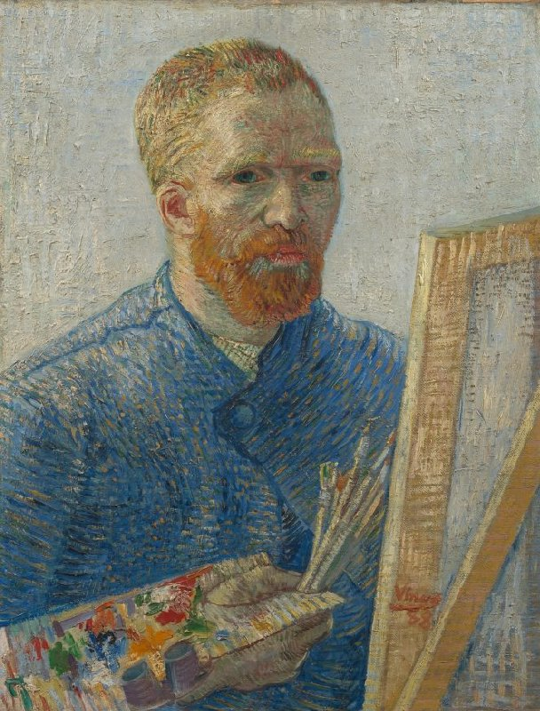

Fig. 1 — Vincent van Gogh, Self-Portrait as a Painter, dicembre 1887-febbraio 1888, olio su tela, 65,1 × 50 cm. Van Gogh Museum, Amsterdam.
Van Gogh a Willemien, 16-20 giugno 1888 (lettera 626), descrivendo proprio questo autoritratto. Fonte: Van Gogh Letters Project — traduzione inglese.
| Autore | Vincent van Gogh |
|---|---|
| Data | dicembre 1887-febbraio 1888 |
| Tecnica | olio su tela |
| Dimensioni | 65,1 x 50 cm |
| Catalogo | F522/JH1356 |
| Collezione | Van Gogh Museum, Amsterdam |
| Luogo di creazione | Parigi |
Quest'opera, ultima realizzata a Parigi, poco prima di partire per il sud della Francia, rappresenta una forte dichiarazione d'identità in cui l'artista si ritrae non più come un cittadino qualunque, ma fiero della sua professione e con gli strumenti del pittore: la tavolozza coperta di colori puri, i pennelli in mano e il cavalletto di legno in primo piano sulla destra. Il dipinto porta all'estremo gli studi parigini sul colore: la giacca da lavoro blu accesa contrasta nettamente con la barba e i capelli rosso-arancioni, creando un effetto di forte vibrazione visiva. Il volto appare serio, emaciato e lo sguardo è fisso, quasi a riflettere l'esaurimento fisico e mentale accumulato durante i due intensi anni trascorsi nella capitale francese.
Arricchimento — record di autorità
File collegati
Risorse esterne